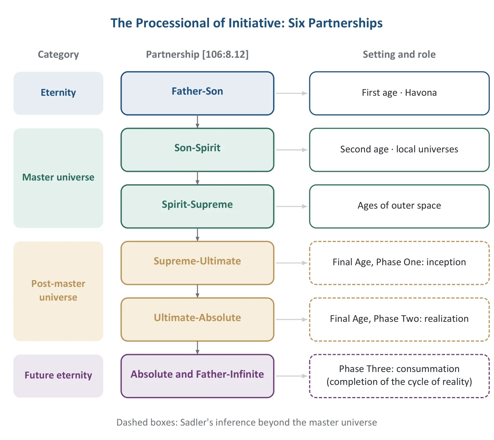
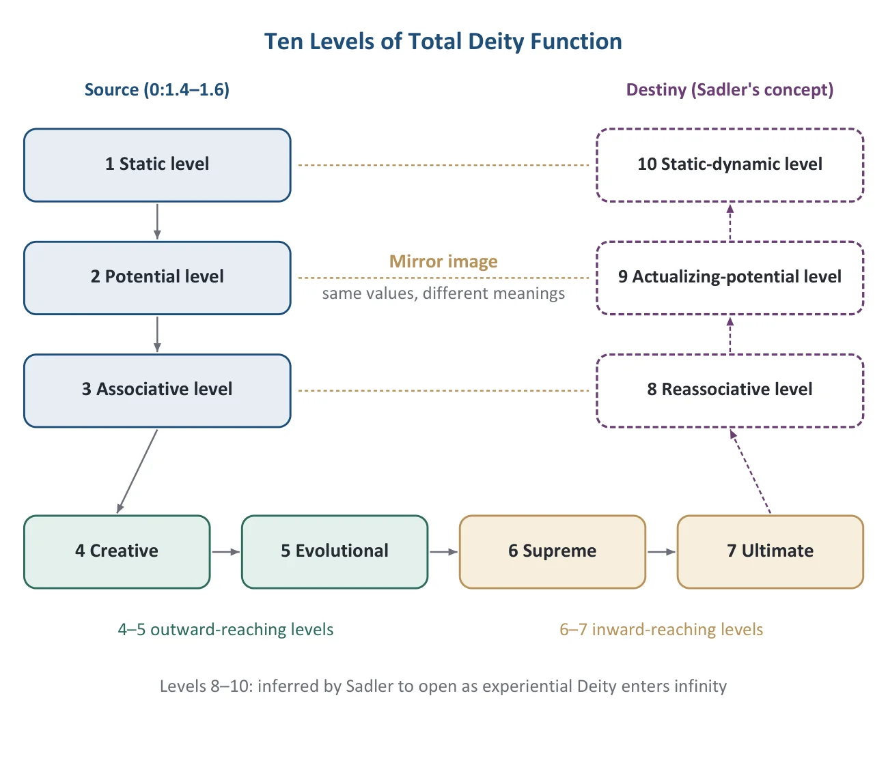

El epílogo en la eternidad y el posfacio
Original: Epílogo en la eternidad (primero a tercero) · Posfacio (pp. 123–146)
EN ESTE CAPÍTULO
Así como el prólogo trató de lo que la Deidad existencial hizo antes de la creación, el epílogo imagina lo que la Deidad experiencial puede hacer más allá de la creación. Distinguiendo la calidad de la cantidad, Sadler se representa a Dios el Supremo y a Dios el Último trinidizando juntos a Dios el Absoluto, mientras al mismo tiempo se abre el Cosmos Infinito. Luego mira hacia las tres fases de la Edad Final, las últimas asociaciones de la Deidad dual y los tres últimos niveles en los que funciona la Deidad total, y termina, como empezó, con el Infinito. En el posfacio, Sadler llama a El libro de Urantia una historia de amor y de aventura y nombra a Dios como su verdadero héroe.
1. Un nuevo comienzo desde el punto muerto (orig., pp. 123–124)
Un epílogo a la medida del prólogo
El «Prólogo en la eternidad» al principio del estudio examinó lo que la Deidad existencial hizo antes de la creación. Esos actos prepararon el escenario de toda la historia, en la que la creatividad del Paraíso se expande hacia fuera y sus resultados vuelven a reunirse en los niveles supremo y último. Ahora, en el extremo opuesto, el epílogo intenta representarse lo que la Deidad experiencial podría hacer más allá de la creación: actos que perforan la Barrera de la Infinidad y, en cierta medida, sortean el Impasse de los Absolutos. El epílogo tiene tres partes. La primera trata de la Edad Final; la segunda, de las profundidades de esa edad; y la tercera, de lo que viene después de «el fin del fin».
Una nota de frustración
Sadler reconoce que el estudio principal terminó con una clara nota de frustración. La fuerza imparable de la Trinidad Absoluta se encontró con el hecho inamovible de la infinidad eterna y llegó a un punto muerto. La unificación de la Trinidad Absoluta es una tarea sin fin, y por eso la Trinidad de Trinidades también está incompleta. En su primer nivel, un miembro, la Trinidad Absoluta, no está unificado; en su segundo nivel, un miembro, Dios el Absoluto, falta por completo.
Además, el universo maestro, movilizado ahora como universo nuclear, aún no tiene citoplasma a su alrededor. El espacio que lo rodea sigue vacío. Cada nebulosa del universo maestro fue organizada por organizadores de fuerza, que actúan en nombre de los Arquitectos Maestros, y Sadler duda de que los planes de los Arquitectos lleguen más allá de las fronteras de la creación maestra. ¿Dónde está, entonces, la salida?
2. Separar la calidad de la cantidad (orig., pp. 124–125)
La clave que encuentra Sadler es la distinción entre calidad y cantidad. Propone emparejar la palabra «absoluto» con la calidad no disminuida y la palabra «infinito» con la cantidad ilimitada. Una vez separadas ambas, el destino absoluto puede alcanzarse de un modo que no es infinito: limitado en cantidad, quizá, pero completo en calidad.
Su ilustración es sencilla. Nadie puede respirar en toda su vida todo el aire de la tierra. Pero ese límite de cantidad no significa que uno no pueda respirar en absoluto, ni rebaja la calidad del aire que se inhala. El aire de una sola inspiración es aire en sentido pleno.
Havona es el ejemplo. En la trinidización del Espíritu por el Padre y el Hijo, cuando Havona llegó a existir, las Deidades vertieron en esa creación central toda la calidad de la perfección divina, sin reservarse nada. Su cantidad, sin embargo, no la hicieron infinita; de lo contrario, todo el espacio eterno habría quedado ocupado por un único universo existencialmente perfecto. Las Deidades limitaron Havona a mil millones de mundos y a un espacio acotado. No hicieron existir existencialmente el universo maestro, ni eternizaron el Cosmos Infinito con una sola orden. Gracias a que la cantidad se limitó de este modo, fue posible todo el desarrollo experiencial posterior a Havona. Del mismo modo, concluye Sadler, al limitar cuánta absolutez podía experiencializarse, las Deidades prepararon el camino del crecimiento sin fin.
El libro de Urantia también piensa en términos de calidad y cantidad, en un pasaje que trata de la función total de la Trinidad Absoluta.
Y parecería también que el no condicionado también sería sin límites, por lo menos desde un punto de vista cualitativo, aunque no estamos igualmente seguros en cuanto a las relaciones cuantitativas.106:6.4
Sadler señala que la única alternativa al crecimiento sin fin es un crecimiento que termina. ¿Y qué vendría entonces? Un universo cuyo crecimiento ha terminado es un universo que ya no tiene adónde ir.
3. La trinidización que abre la Edad Final (orig., pp. 125–127)
La simetría de la primera edad y la Edad Final
Sadler propone examinar la Edad Final con el mismo cuidado que dedicó a la primera edad en el tercer prólogo. Las dos edades son simétricas. La primera edad tiene un final, pero nunca comenzó en el tiempo; la Edad Final comienza en el tiempo, pero nunca termina. Una es una realidad de la eternidad pasada; la otra, una realidad de la eternidad futura.
Un inventario de lo que era actual cuando amaneció la primera edad enumera un par de Deidades existenciales, el Padre y el Hijo, junto con una base de operaciones, la Isla del Paraíso. Unidos como el Padre-Hijo, el Padre y el Hijo trinidizaron al Espíritu Infinito, una Deidad coordinada; como resultado apareció Havona y se formó la Trinidad del Paraíso (capítulos 1 y 3).
Sadler espera un inventario semejante cuando amanezca la Edad Final: un par de Deidades experienciales, el Supremo y el Último, junto con una base de operaciones, el universo maestro terminado. Cree que la historia del universo se repetirá. El Supremo y el Último, unidos como el Supremo-Último, trinidizarán a Dios el Absoluto, una Deidad coordinada; como resultado comenzará el Cosmos Infinito y se entretejerá la Trinidad de Trinidades. Lo que ocurrió existencialmente en la primera edad se repetiría así experiencialmente en la Edad Final.

También hay diferencias. Como el Padre y el Hijo son ambos existenciales e infinitos, todo lo que producen es también existencial e infinito. El Supremo y el Último son Deidades experienciales, menos que infinitas, de modo que Dios el Absoluto, su producto, sería igualmente una expresión experiencial y cualificada. Sin embargo, ambos son todopoderosos, y por eso pueden movilizar toda la realidad experiencial actualizada contenida en el universo maestro completado. En el capítulo 12, Sadler comparó el gran universo con una pelota de tenis y el universo maestro con una gran luna; todo, «desde la pelota de tenis hasta la luna», se pondría al servicio de este acto. La primera trinidización fue precreadora; la última, supercreadora. Puesto que el nivel último es el último nivel creador, explica Sadler, el Supremo-Último y Dios el Absoluto, que aparecen después de él, son manifestaciones supercreadoras.
Dos hermanos con un ariete
Sadler guarda la escena en su mente como una sola imagen. Dos hermanos experienciales, uno mayor y otro menor, cargan al hombro un enorme ariete y se plantan ante un muro en el que está inscrita la palabra «Infinidad». En el ariete va cargado todo el poder obtenido al lograr la soberanía experiencial sobre el universo maestro entero. El hermano mayor anima al menor a golpear con todas sus fuerzas, porque se proponen abrirse paso. Ambos saben muy bien que el muro mismo no puede derribarse. Pero también saben que pueden abrir una brecha en él, y que lo harán. Lo que da peso al ariete es toda cosa, significado y valor experiencial del universo, movilizado como poder-personalidad.
4. Una nueva transformación de la síntesis (orig., pp. 127–128)
Tesis sobre tesis
En el capítulo 9, Sadler mostró cómo una síntesis anterior se convierte en una tesis nueva. Al completarse lo finito, la síntesis en el Ser Supremo dio origen a una nueva tesis, la primera Trinidad experiencial; al completarse lo absonito, la síntesis en Dios el Último dio origen a una nueva tesis, la segunda Trinidad experiencial. El Supremo y el Último eran, respectivamente, «la síntesis de lo finito total» y «la síntesis de lo absonito total».
Ahora Sadler ve una transformación de nuevo tipo. En su unión trinidizadora, las dos Deidades experienciales se convierten ellas mismas en nuevas tesis. El Supremo se convierte en la tesis de lo finito total; el Último, en la tesis de lo absonito total; y Dios el Absoluto, a quien trinidizan, se convierte en una tercera tesis, la tesis experiencial de lo absoluto (cualificado). Se superpone tesis sobre tesis.
¿Ha ocurrido antes algo parecido? Sadler responde que algo semejante apareció en el prólogo. Al salir de la infinidad, Dios estableció al Hijo como la tesis absoluta de la Deidad y, como Padre del Hijo, se estableció a sí mismo como la pretesis de la Deidad. El Padre-Hijo estableció a su vez al Espíritu como la tesis asociativa de la Deidad. Esta superposición triple culmina en la Trinidad del Paraíso, la tesis de la Deidad existencial indivisa. Del mismo modo, sostiene Sadler, la tesis triple de la Deidad experiencial (Supremo, Último y Absoluto) encuentra unidad cualitativa en el segundo nivel de la Trinidad de Trinidades, y en ese proceso se expande hacia fuera como la tesis indivisa de la Deidad total, a la vez existencial y experiencial.
Semejantes, pero no idénticos
Sadler insiste repetidamente en que el paralelo es análogo, no homólogo. Al trinidizar al Espíritu, el Padre-Hijo emergía de la infinidad; al trinidizar a Dios el Absoluto, el Supremo-Último busca entrar en la infinidad. Lo que el Padre-Hijo logró en calidad y en cantidad, el Supremo-Último solo puede lograrlo en calidad. Dios el Absoluto aparece como realidad absoluta en calidad, pero en cantidad y universalidad es la manifestación de un Absoluto que es menos que infinito.
5. Comienza el Cosmos Infinito; toma forma la Trinidad de Trinidades (orig., pp. 128–130)
La primera entrega del Cosmos Infinito
Sadler considera la aparición trinidizada de Dios el Absoluto como el acontecimiento más profundo de la historia del universo desde la aparición del Espíritu Infinito. Así como el Espíritu Infinito se hizo personal junto con la aparición de un universo eterno (Havona), la aparición de Dios el Absoluto irá acompañada del comienzo del Cosmos Infinito. La primera creación es eterna en acto; la última creación es infinita en potencia. Puesto que el Supremo y el Último pueden movilizar tanto los potenciales físicos como los espirituales, su unión es total y no deja nada fuera. Sadler infiere, por tanto, que Dios el Absoluto aparecerá en el mismo momento en que se materialice la zona más interior del Cosmos Infinito.
¿Cómo será esta «primera entrega» del Cosmos Infinito? Como dijo en el capítulo 15, Sadler piensa que no se parecerá a nada de lo que ha aparecido en la creación maestra. Por primera vez, incluso los diseños trascendentales de los Arquitectos Maestros serán ellos mismos superados. Añade, sin embargo, que ciertos aspectos existenciales de la eterna Havona podrían dar un indicio del carácter de este nuevo dominio.
Sobre su tamaño solo podemos conjeturar. Si se fija el gran universo en el tamaño de una pelota de tenis, el universo maestro era una luna de 3.200 millas de diámetro. Sadler espera que la misma proporción se repita una vez más. Redúzcase el universo maestro a una pelota de tenis, y la zona más interior del Cosmos Infinito igualaría en tamaño a la luna. Y eso es solo la zona más interior, probablemente la más pequeña. Sus razones son los casos anteriores. Havona es muy pequeña comparada con el tamaño (aunque no con la masa) de los superuniversos, y el gran universo es pequeño comparado con el universo maestro. Un núcleo siempre ha sido pequeño al lado del citoplasma que gobierna.
Se completa el segundo nivel
La aparición de Dios el Absoluto ofrece un paralelo más con la aparición del Espíritu Infinito: ambas conducen a la formación de una Trinidad. Así como el Espíritu Infinito completó la personalización de la Deidad existencial e hizo así posible la Trinidad del Paraíso, la aparición (cualificada) de Dios el Absoluto completaría en efecto el segundo nivel de la Trinidad de Trinidades. El libro de Urantia dice que existen diversas teorías sobre el tercer miembro de este segundo nivel.
Dios el Absoluto está indudablemente involucrado en esta asociación como la consecuencia de personalidad de la función final de la Trinidad Absoluta, sin embargo el Absoluto de Deidad es una realidad existencial del estado eterno.106:8.16
Sobre el tercer nivel, ni siquiera Sadler está seguro. Mientras Dios el Absoluto permanezca para siempre incompleto en sentido cuantitativo, piensa él, el tercer nivel estará ocupado por el Absoluto Universal. Este juicio se apoya en las siguientes palabras del texto.
Probablemente sería tan sólo una distorsión mínima de la verdad si se concibiese al tercer miembro de la Trinidad de Trinidades como el Absoluto Universal …106:8.18

Si Dios el Absoluto llegara alguna vez a terminar su crecimiento experiencial, nos encontraríamos fuera de la infinidad, más allá del fin de la eternidad. Lo que Sadler quiere decir es que eso nunca sucederá.
6. Las profundidades de la Edad Final: tres fases y la Tercera Trinidad Experiencial (orig., pp. 131–134)
Diques para el pensamiento
Una vez abierta una brecha en la Barrera de la Infinidad, toda la eternidad futura queda abierta a la especulación sin fin. Para evitar que el pensamiento sea arrastrado hacia lo absurdo por un mar de «¿y si…?», Sadler propone construir diques a su alrededor. Divide el desarrollo del Cosmos Infinito en tres fases. La Fase Uno es la zona más interior, hecha realidad junto con la aparición de Dios el Absoluto, y se corresponde con el Supremo-Último. La Fase Dos es la etapa intermedia de desarrollo que sigue; puede tener o no un final, y se corresponde con el Último-Absoluto. La Fase Tres puede ser una etapa final puramente teórica, que se corresponde con la asociación del Absoluto y el Padre-Infinito, la «completación» del ciclo de la realidad.
La razón de las tres divisiones es sencilla. Para contener las ideas de comienzo, medio y destino, o de iniciación, realización y consumación, se necesitan al menos tres compartimentos. En la práctica, igual podrían ser siete, o un millón. La tríada de iniciación, realización y consumación procede del lenguaje que El libro de Urantia emplea al describir la Trinidad de Trinidades [106:8.12].
La Tercera Trinidad Experiencial
Sadler presenta la proposición de que el segundo nivel de la Trinidad de Trinidades es a su vez otra trinidad, la «Tercera Trinidad Experiencial». Su fundamento es la semejanza de los orígenes. Al principio, el Padre y el Hijo, unidos como el Padre-Hijo, trinidizaron al Espíritu, que completa la Deidad existencial como su tercera persona, y estos tres se convirtieron en la Trinidad del Paraíso. Al final, el Supremo y el Último, unidos como el Supremo-Último, trinidizan a Dios el Absoluto, que se convierte en la tercera persona de la Deidad experiencial, y estos tres se convierten en la Trinidad experiencial final.
Una diferencia es decisiva. El Espíritu «completa» la actualización de la Deidad existencial, mientras que Dios el Absoluto «comienza» la actualización final de la Deidad experiencial. La trinidización por el Padre-Hijo fue un acto de infinidad ilimitada; la trinidización por el Supremo-Último es absoluta en calidad, pero no infinita en cantidad. El Espíritu Infinito, eternizado como un ser completo, tiene poco margen para crecer; Dios el Absoluto, en quien solo una parte de la infinidad del Absoluto de Deidad se ha hecho actual, se halla en el umbral de un crecimiento ilimitado. La diferencia entre lo potencialmente infinito y lo actualmente infinito es la diferencia entre el crecimiento y la ausencia de crecimiento.
Sadler concluye que esta Tercera Trinidad Experiencial difiere de todas las demás trinidades. Es la única compuesta exclusivamente por Deidades experienciales. Como la Trinidad del Paraíso, tiene un tercer miembro trinidizado, pero se diferencia en que todavía está creciendo, expandiéndose y unificándose. Es también la única trinidad contenida dentro de otra trinidad, la Trinidad de Trinidades.
El crecimiento de Dios el Absoluto
Sadler prevé tres relaciones en las que crecerá Dios el Absoluto. La primera es con la Trinidad Absoluta, que aún no está unificada. Normalmente, esa Trinidad tendría que unificarse antes de que Dios el Absoluto pudiera aparecer; habiendo aparecido primero por el método de la trinidización, Dios el Absoluto coopera ahora con su Trinidad «ancestral». La segunda es con el Supremo-Último. Así como el Espíritu expresa de manera intensiva la asociación Padre-Hijo, Dios el Absoluto expresa de manera extensiva la asociación Supremo-Último y crece junto con ella. La tercera, y la más distintiva, es con el Absoluto de Deidad. Como Dios el Absoluto ha sido actualizado a partir de solo una parte del potencial infinito del Absoluto de Deidad, fuera de él queda una infinidad intacta de potencial. Él se expande hacia fuera, hacia ese potencial, y esta expansión es su crecimiento. Puesto que el margen para crecer es infinito, el crecimiento nunca termina.
Sadler y el texto
El libro de Urantia habla de Dios el Absoluto como «la consecuencia de personalidad de la función final de la Trinidad Absoluta» [106:8.16]. Tomado en orden, primero se unificaría la Trinidad Absoluta, y luego Dios el Absoluto aparecería como su resultado. Sadler es consciente de este orden, y por eso ofrece la interpretación de que Dios el Absoluto aparece «antes de tiempo» por la vía distinta de la trinidización y luego coopera con la Trinidad Absoluta aún no unificada. Esta es una construcción propia de Sadler, un intento de llenar un vacío que el texto deja abierto. Además, donde el original (p. 134) describe la Trinidad de Trinidades como «existencial-existencial», parece tratarse de un lapsus por «existencial-experiencial» [cf. 0:12.9].
7. Las últimas asociaciones de la Deidad dual (orig., pp. 135–139)
La Deidad dual abre camino, la Trinidad consolida
A lo largo de todo el estudio, Sadler ha observado un principio en acción: la Deidad dual abre camino y la Trinidad consolida. ¿Seguirá valiendo el principio más allá del universo maestro? Sadler recupera las seis asociaciones que da a conocer El libro de Urantia.
La asociación Padre-Hijo se ha vuelto Hijo-Espíritu y luego Espíritu-Supremo y sucesivamente Supremo-Último y Último-Absoluto, aun hasta Absoluto y Padre-Infinito —completándose así el ciclo de la realidad.106:8.12
Sadler clasifica estas seis en cuatro categorías: la eternidad (Padre-Hijo), el universo maestro (Hijo-Espíritu y Espíritu-Supremo), lo posterior al universo maestro (Supremo-Último y Último-Absoluto) y la eternidad futura (Absoluto y Padre-Infinito). Estas asociaciones comienzan siendo existenciales, se vuelven progresivamente más experienciales y, por último, se mueven en una dirección experiencial-existencial.

La procesión de la iniciativa
Sadler da a esta secuencia el nombre de «La procesión de la iniciativa». La idea es que Dios cede a sus coordinados una parte de la iniciativa en la autoexpresión creadora, y quiere que esa parte sea tan plena como ellos puedan soportar. Dios abre la realidad cuando se hace Padre del Hijo Original, y con ese Hijo hace a los Hijos Creadores. Los Hijos Creadores gozan de plena filiación con respecto a las Deidades del Paraíso, pero en sus propios universos en evolución se convierten en padres experienciales. En la relación Padre-Hijo, el Espíritu fue personalizado como la agencia coordinada que da expresión a Havona; en la relación Hijo-Espíritu, el Espíritu, por medio de los Espíritus Creativos, se convierte en el «segundo creador» de los universos locales. Lo que el Hijo Eterno «experimentó» en el Paraíso en la eternidad, los espíritus del Espíritu lo experimentan en el tiempo y el espacio. En la tercera fase, el Espíritu-Supremo, Sadler espera que el Espíritu tome una nueva iniciativa en el espacio exterior, asistido por el Ser Supremo, cuyo crecimiento estará para entonces completo. Como el texto no dice nada del resultado, Sadler no especula sobre él.
Supremo-Último y Último-Absoluto
Las tres últimas asociaciones se hallan más allá del universo maestro, puesto que implican al Último, que en la práctica entra en escena solo después de que toda la creación maestra está terminada. Sadler compara el Supremo-Último con el Padre-Hijo. Cada uno trinidiza a la tercera persona de una Deidad, cada uno abre un universo (el universo de la eternidad y el universo de la infinidad), y cada uno forma una trinidad junto con esa tercera persona. Pero mientras que el Padre-Hijo inicia, realiza y consuma, el Supremo-Último inicia y realiza en parte, y no consuma.
La Fase Uno, abierta por el Supremo-Último, será inmensamente larga. Sadler dice que pensar en ella es como pedir a un mecánico que trabaja con diezmilésimas de pulgada que se represente el tamaño de una galaxia situada a millones de años luz. Con el Último-Absoluto, la especulación se vuelve aún más difícil, y Sadler procede por analogía. Así como el Hijo-Espíritu surgió del Padre-Hijo, el Último-Absoluto surgirá del Supremo-Último y se hará cargo de la fase intermedia del Cosmos Infinito, su «realización». Sin embargo, esta asociación difícilmente puede alcanzar siquiera un destino cualitativo; puede comenzar, pero nunca puede terminarse. Aunque la zona más interior aparezca de repente, como lo hizo Havona, el crecimiento que sigue, si es secuencial, no tiene fin.
Sadler inserta aquí un paréntesis. El Último-Absoluto no es solo asunto del futuro remoto; ya ahora, en el gran universo, es real como nivel de valor. El texto describe así el destino de los Ajustadores Personalizados.
… y de este modo están ambos destinados a la futura superpersonalidad eterna del ministerio trascendental de los dominios absonitos del Último, el Supremo-Último, y aun en los niveles del Último-Absoluto.109:7.5
Un Ajustador Personalizado es el fragmento mismo de Dios que se fusiona con nosotros, ahora personalizado. Si tales Ajustadores pueden servir hasta el nivel del Último-Absoluto, razona Sadler, también los finalistas funcionarán allí, con tiempo y crecimiento suficientes.
La primera y la última asociación
La asociación final, el Absoluto y el Padre-Infinito, es la «completación» del ciclo de la realidad. Sadler la ve como una asociación existencial-experiencial. Existencialmente está siempre presente; experiencialmente está siempre distante; existencial-experiencialmente es una «realidad en devenir». Por mucho que avance la actualización, el potencial que nunca llegará a expresarse no disminuye en lo más mínimo. Si se trata de una relación de pura eternidad, carece de sentido hablar de crecimiento por comparación con el pasado o el futuro. Como dice Sadler, puede que la relación no esté más allá del concepto, pero ciertamente está más allá de todo concepto comprensible.
8. Los tres últimos niveles de función de la Deidad total (orig., pp. 139–142)
Más allá de los siete niveles
El libro de Urantia dice que la Deidad total funciona en siete niveles [0:1.3]. En el segundo prólogo, Sadler examinó los niveles estático, potencial y asociativo, y en el estudio principal, los niveles creador y evolutivo, que se extienden hacia fuera, y los niveles supremo y último, que se dirigen hacia dentro. Sin embargo, el nivel último es el último nivel creador, y Dios el Absoluto es supercreador. Ninguno de los siete niveles se llama nivel absoluto; el nivel absoluto se menciona como el nivel que la Trinidad del Paraíso ha alcanzado existencialmente.
Existencialmente las Deidades del Paraíso logran este nivel mediante la Trinidad, pero este tercer nivel de la expresión de la Deidad unificadora no está plenamente unificado experiencialmente.0:1.13
Sadler cree que, hasta que las Deidades experienciales se factualicen, estos siete niveles son todos los que hay, pero que una vez factualizadas las tres Deidades experienciales, saldrán a la luz tres niveles más de función de la Deidad total. La Deidad existencial surge dentro de la infinidad y se mueve hacia fuera desde ella; la Deidad experiencial surge fuera de la infinidad y se esfuerza por irrumpir en ella. Si la Deidad existencial regresara a la infinidad, desandaría su camino del nivel asociativo al potencial y luego de nuevo al estático. El acercamiento de la Deidad experiencial es diferente. Los tres niveles que nombra Sadler son el Nivel Reasociativo, el Nivel Potencial en Actualización y el Nivel Estático-Dinámico.

Imágenes especulares
Los tres últimos niveles son imágenes especulares de los tres primeros. El reasociativo (8) corresponde al asociativo (3); el potencial en actualización (9), al potencial (2); y el estático-dinámico (10), al estático (1). Sadler explica que el destino refleja la fuente: los valores absolutos siguen siendo los mismos, y solo cambian los significados. El valor de lo infinito no se altera, pero las relaciones de lo infinito, que son sus significados, pueden cambiar casi sin límite.
El mejor ejemplo del nivel reasociativo es la Trinidad de Trinidades. Si el nivel asociativo está representado por la Trinidad del Paraíso, que unifica absolutamente la Deidad existencial, en el nivel reasociativo toda actualización de la Deidad, existencial o experiencial, vuelve a reunirse. Experiencialmente, la Trinidad de Trinidades está siempre incompleta, pero puesto que su miembro, la Trinidad del Paraíso, es existencialmente infinito, esa incompletud siempre puede subsanarse.
Pero aparte de todo esto, la Trinidad original del Paraíso es potencialmente infinita puesto que el Padre Universal verdaderamente es infinito.0:12.9
Para el nivel potencial en actualización, Sadler elige el nombre con cuidado. Hablar de «potencial actualizado» implicaría que el potencial se ha agotado; como el potencial no tiene fin, la forma progresiva, «en actualización», es la correcta. El logro cuantitativo pleno de este nivel requeriría tres cosas: que la capacidad del Absoluto No Cualificado se agotara por completo, de modo que el Cosmos Infinito se convirtiera en un universo actual sin exterior ni fin; que la capacidad del Absoluto de Deidad se agotara igualmente, de modo que Dios el Absoluto quedara completado como una persona experiencial-absoluta de la Deidad, coordinada con el Hijo Eterno; y que ambos se sintetizaran perfectamente como poder-personalidad. Eso equivaldría a lograr experiencialmente lo que el Absoluto Universal hace existencialmente.
La improbabilidad del alcance del destino infinito no previene en lo más mínimo el surgimiento de ideas sobre dicho destino …106:7.9
Sadler dice que no hay por qué desanimarse porque este nivel no pueda alcanzarse nunca cuantitativamente. Si todo el potencial se actualizara, todo crecimiento, todo cambio y toda aventura llegarían a su fin: un hoy eterno sin mañana. Dios, en su sabiduría, lo ha evitado. Su plan provee un universo siempre joven y en crecimiento, una creación siempre en el umbral de una nueva aventura, un universo que vive perpetuamente en el amanecer de una primavera interminable.
El Nivel Estático-Dinámico
El último nivel es el alcance final de la Deidad experiencial, y quizá de las criaturas experienciales, hacia el Padre como el Infinito. Al principio, Sadler imaginó a Dios como el Infinito en «el momento estático de la eternidad» en el centro de la Edad Cero (capítulo 2).
La infinidad está colmada por el Infinito; el Infinito envuelve la infinidad. Éste es un momento hipotético estático de la eternidad …105:1.5
Ahora, como su contrapartida, imagina un «momento hipotético estático-dinámico de la eternidad» que existe en teoría en la eternidad futura. Si ese momento pudiera alcanzarse, conoceríamos al Padre como el Infinito. Como no puede, encontraremos al Padre como el Absoluto, pero seguiremos buscándolo para siempre como el Infinito. Sadler entiende la «sombra de la infinidad» que se proyecta sobre la ilimitación de la realidad potencial como la presencia del Absoluto Universal. Ese misterio crece con el universo en crecimiento, y puede ahondarse más deprisa de lo que crecen los propios finalistas.
9. Después del fin del fin: concluir con el Infinito (orig., pp. 143–144)
Fuente y destino
El tercer epílogo es breve. Sadler toma prestada la imagen de El libro de Urantia de toda la realidad como una vasta elipse.
La mente humana, al tratar de penetrar la eternidad-misterio del origen y destino de todo lo que se llama real, puede encarar el problema en forma útil concibiendo que la eternidad-infinidad es una elipse casi ilimitada producida por una sola causa absoluta, y que funciona en todo este círculo universal de diversificación sin fin, buscando por siempre un potencial de destino absoluto e infinito.105:0.1
Lo que el primer prólogo llamó «fuente», el último epílogo lo llama «destino», pero al principio y al final el objeto de la búsqueda es la misma Fuente-Destino: el Infinito, a quien mejor conocemos como Dios. Así como Dios otorgó su naturaleza absoluta a su Hijo primogénito y compartió la soberanía sobre toda la creación en el Espíritu y como la Trinidad, así también está empeñado en la obra eterna de revelarse a sí mismo y compartir su naturaleza con todos sus hijos y con los hijos de sus hijos.
Los valores permanecen, los significados crecen
Por mucho que se extiendan las fuerzas y las personalidades de la creación, desde el Paraíso hasta las profundidades del Cosmos Infinito, el valor de Dios no aumenta ni disminuye. El Infinito no cambia. Pero para cada ser que participa en la aventura, el significado de Dios se modifica, se enriquece y se amplía.
No comprendemos de qué manera se puede aumentar el valor de lo que sea infinito y divino. Pero descubrimos que se puede modificar, o si no aumentar los significados, aun en las relaciones de la Deidad infinita.115:2.2
Tres aventuras, tres Padres
Sadler resume el futuro del ascendente como tres aventuras. En la Aventura Suprema llegamos al Paraíso y encontramos a Dios, experimentamos la totalidad de la Deidad finita al encontrar al Supremo al cierre de la segunda edad, y llegamos a comprender al Padre tal como las criaturas finitas pueden conocerlo, el Padre como el Finito. La Aventura Última es la búsqueda del Padre superfinito, el Padre como el Absonito. Requiere un tiempo extremadamente largo, pero como tiene un límite lejano, un día llegaremos realmente a conocer al Último. La última, la Aventura Absoluta, no tiene fin. Encontraremos verdaderamente a Dios como el Absoluto, pero nunca completaremos ese hallazgo, porque la exploración de la infinidad de Dios ha de ser interminable.
Tarde o temprano todas las personalidades universales comienzan a comprender que la búsqueda final de la eternidad es la exploración sin fin de la infinidad, el viaje que nunca acaba de descubrimiento hacia la absolutez de la Primera Fuente y Centro.106:9.11
Aun así, sabemos que el Infinito existe y es real, que precede a la Primera Fuente y sigue al destino final. El pasaje que cita Sadler dice de qué clase de conocimiento se trata.
Dios, vuestro Padre y mi Padre, es esa fase del Infinito que percibimos en nuestras personalidades como una realidad actual experiencial, pero el YO SOY permanece por siempre como nuestra hipótesis de todo lo que nosotros creemos que no es conocible de la Primera Fuente y Centro.105:1.6
Sadler cierra el epílogo con el pensamiento de que, incluso al final del tiempo, las palabras de Hebreos 11:1, «la fe es la certeza de lo que se espera», seguirán siendo verdaderas.
10. Posfacio: una historia de amor y de aventura (orig., pp. 145–146)
En su prefacio, Sadler comparó El libro de Urantia con una sinfonía (capítulo 1). En el posfacio compara el mismo libro con una novela, un relato de amor y de aventura. Lo que lo sostuvo a lo largo de su estudio fue, por un lado, el amor divino y, por otro, un espíritu de aventura que parece hallarse en la raíz de los propósitos de Dios.
El Dios que retrata Sadler da sin medida, pero nunca es indulgente. Aquel que da tanto por amor también pone desafíos ante quienes ama. Dios es un creador de problemas, y al resolverlos sus hijos crecen. Permaneciendo él mismo inmutable, Dios es siempre causa de cambio. Coloca una levadura nueva y desafiante dentro de lo viejo y asentado, y a medida que lo viejo y lo nuevo se desafían y se responden mutuamente, ambos superan sus límites anteriores. Esto es también una nueva formulación, en términos del carácter divino, del principio de tesis-antítesis-síntesis que recorrió todo el estudio. Para compartir con cada uno de sus hijos la aventura del crecimiento, hace que su espíritu more dentro de nosotros.
Por eso dice Sadler que el verdadero héroe de esta historia es Dios: la personalidad más interesante y fascinante de todo el vasto universo, el autor del amor y la verdadera fuente del espíritu aventurero. Cuando vino como uno entre los hombres, dijo: «Sígueme», y quien se atreva a seguirlo puede hacerlo.
El valor y la humildad de la especulación
Sadler no oculta que su estudio ha sido una especulación audaz. Encuentra consuelo en dos pasajes. Uno dice que la revelación deja deliberadamente cosas sin decir.
Dicha expansión conceptual difícilmente sería deseable porque privaría a los mortales pensantes durante los próximos mil años de ese estímulo por la especulación creadora que proporcionan estos conceptos parcialmente revelados.30:0.2
El otro es el pasaje que colocó en la última línea de su libro. La mente humana ve oscuramente y comprende con lentitud, y sus conjeturas contienen sin duda muchos errores. Pero incluso al final queda un consuelo.
Puede que no sea todo en el fantaseamiento del hombre sobre el universo un hecho, pero mucho, muchísimo en él es verdad.196:3.31
Para los lectores que han seguido este comentario, estas palabras sugieren también una manera de leer. El cómputo de las edades de Sadler, su núcleo y citoplasma, su Tercera Trinidad Experiencial y sus diez niveles de función de la Deidad no son hechos revelados, sino la especulación de un hombre que tomó la revelación como pista. Aunque no resultaran ser hechos, la verdad que transmiten, que nos invita a leer el universo como una historia del amor y la aventura de Dios, permanecerá en ellos por mucho tiempo.
Puntos clave
- El epílogo es la contrapartida del prólogo. Así como el prólogo trató de lo que la Deidad existencial hizo antes de la creación, el epílogo imagina lo que la Deidad experiencial hace más allá de la creación.
- Sadler resuelve el punto muerto separando la calidad de la cantidad. El destino absoluto puede alcanzarse plenamente en calidad aun cuando esté limitado en cantidad, y Havona es el prototipo.
- Sadler infiere que el Supremo y el Último, unidos como el Supremo-Último, trinidizan a Dios el Absoluto, y que la zona más interior del Cosmos Infinito aparece junto con él. Esto es análogo, pero no homólogo, a la trinidización del Espíritu por el Padre-Hijo.
- Con la aparición de Dios el Absoluto, la Trinidad de Trinidades obtiene completo su segundo nivel, que Sadler considera la «Tercera Trinidad Experiencial». Siguiendo el texto, entiende que el tercer nivel es el Absoluto Universal.
- Sadler lee las seis asociaciones de la Deidad dual nombradas en El libro de Urantia [106:8.12] como «La procesión de la iniciativa», y hace corresponder las tres últimas asociaciones con las tres fases del Cosmos Infinito (iniciación, realización, consumación).
- A los siete niveles de la Deidad total, Sadler añade los niveles reasociativo, potencial en actualización y estático-dinámico, que ve como imágenes especulares de los tres primeros. Los tres son conceptos de Sadler.
- El valor de Dios no cambia, pero su significado crece. Encontraremos al Padre como el Absoluto, pero seguiremos buscándolo para siempre como el Infinito.
- En el posfacio, Sadler nombra a Dios, la fuente del amor y de la aventura, como el verdadero héroe de toda la historia, y espera que sus especulaciones, aun donde no sean hechos, contengan mucha verdad.